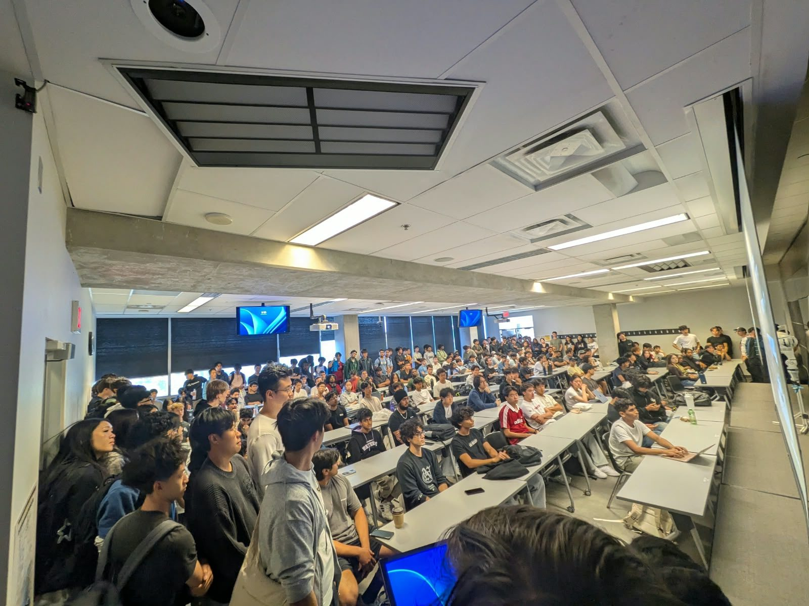
@ UWWaterloo Underwater Technology Team
Co-founding a team building an underwater robot.
See more
@ UWCo-founding a team building an underwater robot.
See more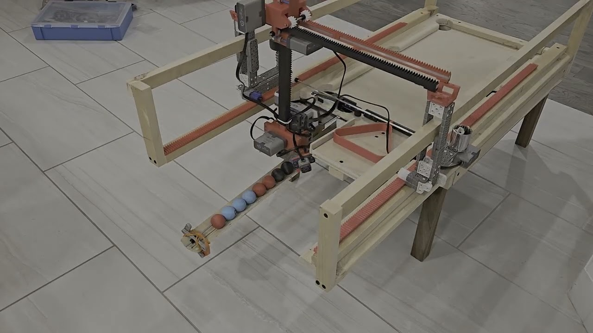
An autonomous mini pool table that resets itself.
See more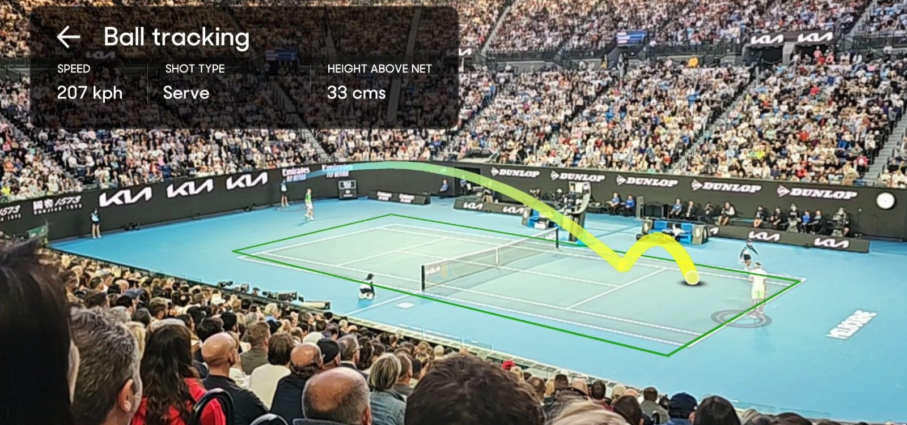
@ Packet39Live ball tracking at the Australian Open
See more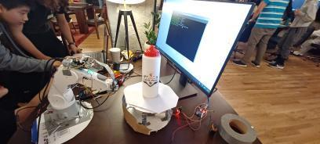
Robotic photogrammetry 3D scanner
See more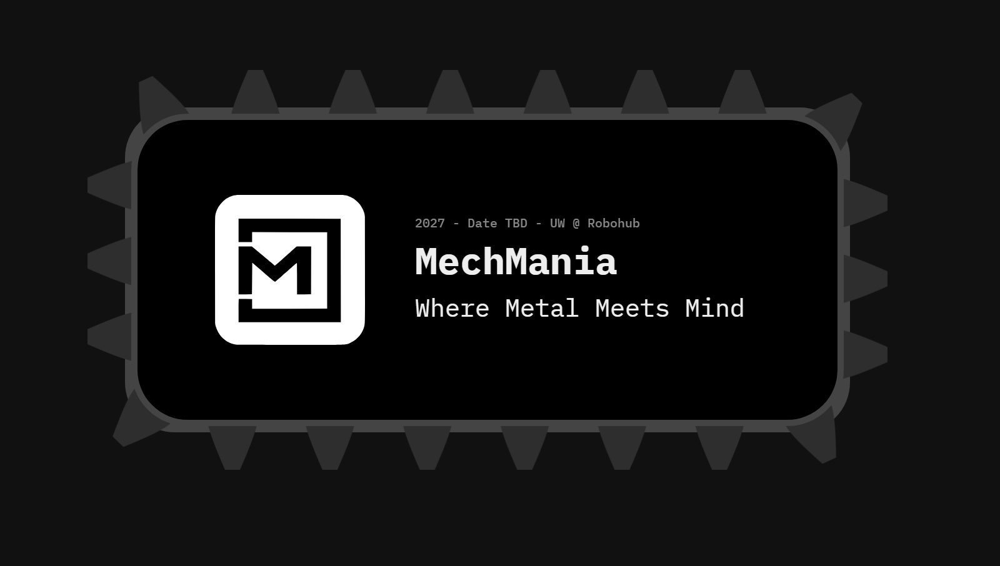
High school robotics competition
See more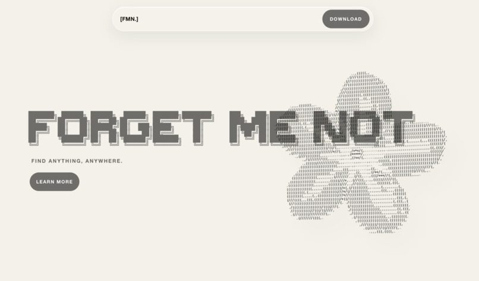
AR glasses that find lost keys
See moreVR guitar in Unity
See moreAR overlay for circuit assembly
See moreSystem-wide Vim keyboard control
See more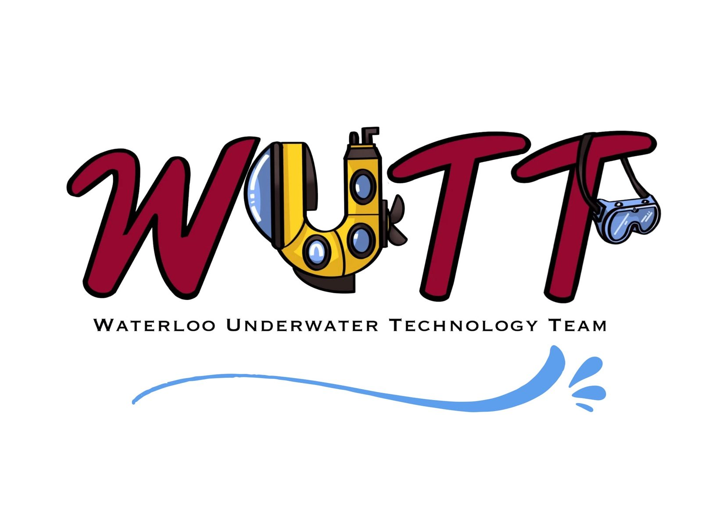
The internationally acclaimed underwater robotics competition MATE ROV requires its participating teams to create a remotely operated submarine to complete their gauntlet. The team that I am founding and leading, partnered with industry giants such as Waterloo RoboHub and Impossible Metals, is going to complete this gauntlet completely autonomously. After fundraising over $20,000 and recruiting 50 members, our team will be designing every part of this robot from the ground up.
Bttrpie is an autonomous mini pool table that resets itself between games. My team and I designed and simulated every part in SolidWorks, then built a custom 3-axis rack-and-pinion gantry with PID motor control that collects, sorts, and racks the balls on its own. Watch the video above (2× speed recommended) to see it run end to end.
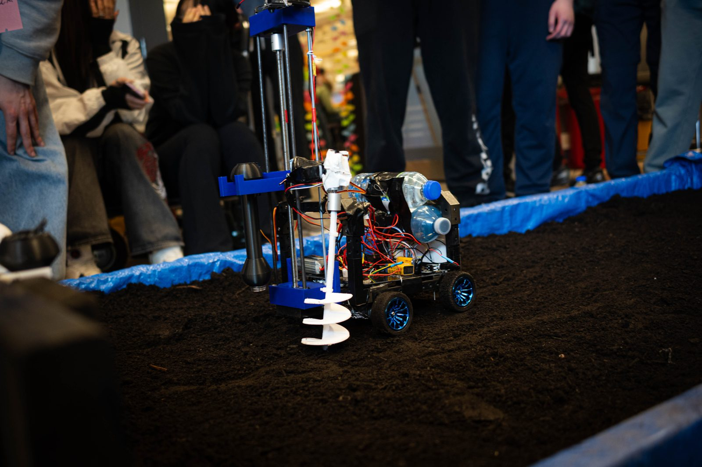
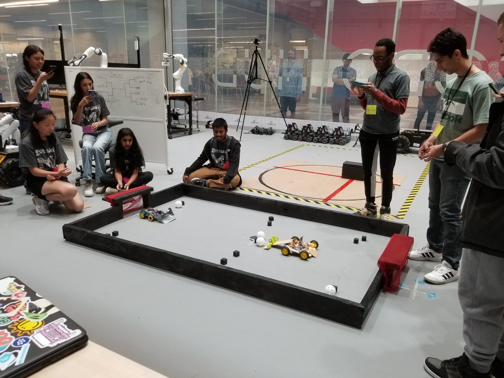
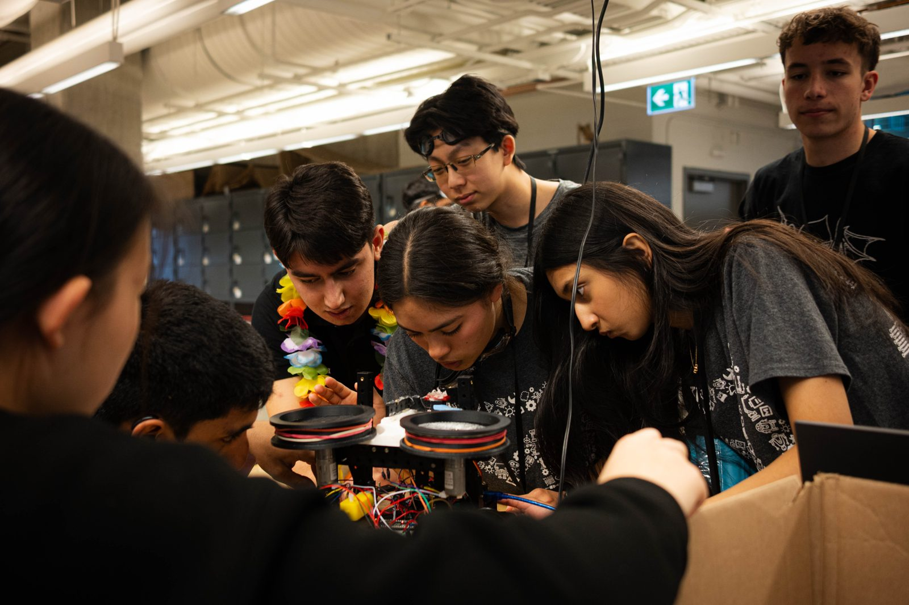
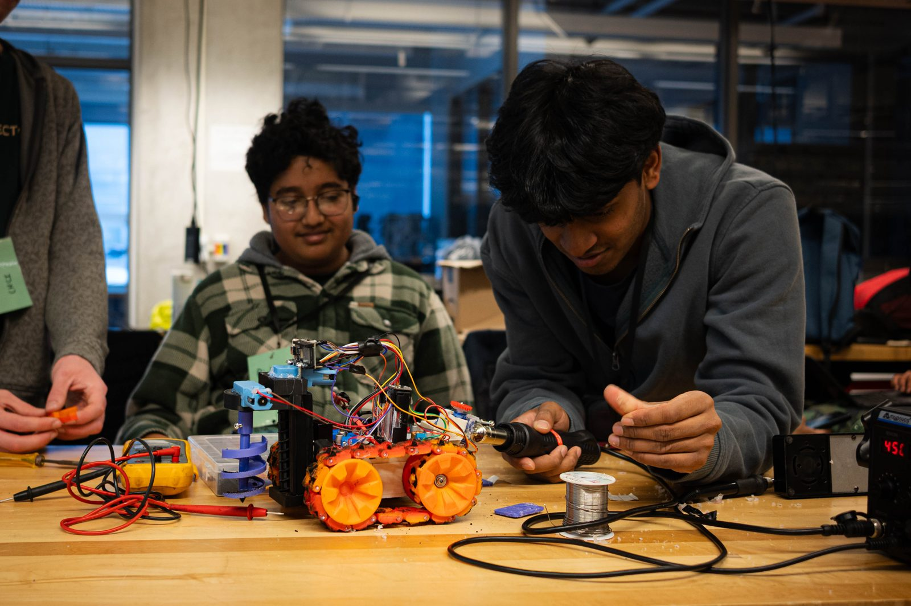
When our robotics club couldn't afford a competitive team, there was nowhere accessible for high school students in Waterloo to compete, so I co-founded MechMania and led a team of 10+ to build one. Every year, 120+ students from 12 schools compete for free, backed by sponsors like Waterloo RoboHub. Now entering its 4th year, it's still going strong under new leadership.
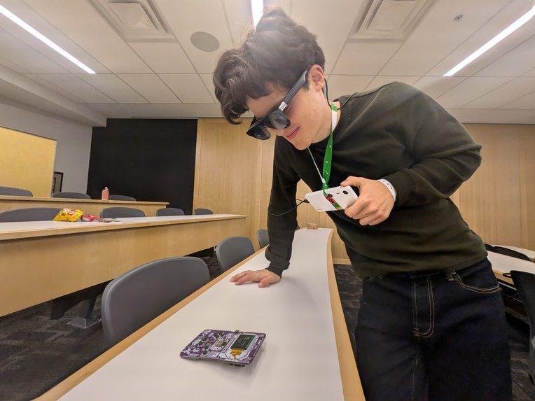
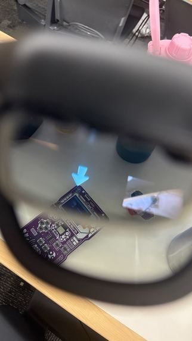
Everyone loses their keys. Forget Me Not is an AR app built at Hack the North 2026 that gives you a constant pointer to whatever you've lost, right in your XREAL One glasses. We trained a custom model to spot the item, calibrated a card to estimate its distance, and bridged it all through Android and Unity to the glasses with only hours to spare.
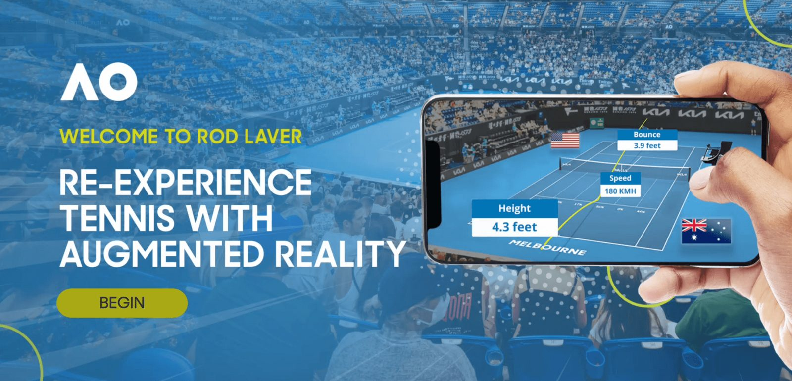
At Packet39, I optimized the custom AR engine behind this mobile app for Rod Laver Arena at the Australian Open. Point your phone at the court and it tracks the ball live, showing speed, height, and trajectory, then lets you watch replays from your seat or from any angle.
VtaR (VR + guitar) is a Quest 3 app built in Unity to showcase a friend's guitar skills, letting anyone shred without the years of practice. Turn your audio on for the video above!
Asset Credits: Cartoon Guitar by Denis Temirgalin, licensed under CC Attribution. Stylized Mangrove Greenhouse by Bársh, licensed under CC Attribution.
Warpz is a robotic 3D scanner that won 1st place at a Waterloo robotics competition. Place an object on the turntable, and a robot arm holds the camera steady while 50 photos are taken and streamed to a server that builds a textured 3D model with Meshroom. A React web app lets you watch the scan and download the result.
ARmatica won 3rd place at JAMHacks, a 36-hour hackathon. The Unity app overlays a 3D model of your circuit directly onto a real breadboard, anchored by a QR code, so you can see exactly where each part goes.
Omnivim brings Vim's editing motions to your whole computer, so you never need to touch a mouse. Built in Python, it adds Normal, Insert, Visual, and Mouse modes system-wide, with a tray icon showing which mode you're in. I use it every day.